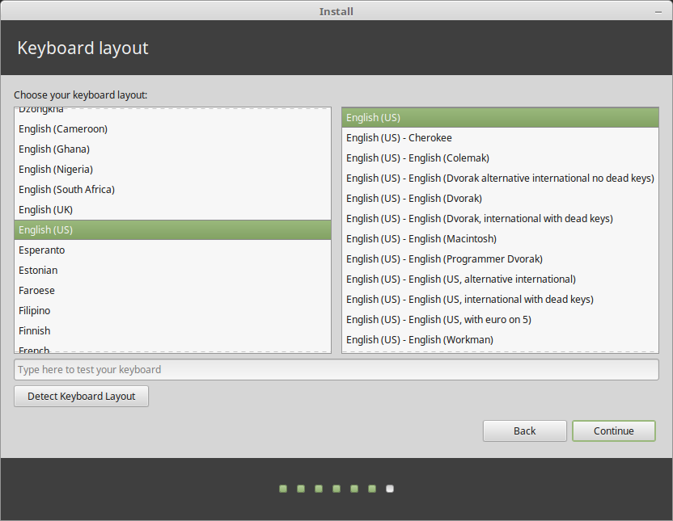

Pragmatic Penguin
Home
Why Linux
File System
How to Bash Shell
Linux Mint
Linux Features
Customization
Add-Ons
About Linux
History
Q & A
Join Us!
Install Linux Mint
Linux Mint takes just a few clicks to install!
Once you have your OS ready to go, learn more about how to operate the system in our File System and Bash Shell How To sections
Step 1: After downloading the install file, run the file to open the start screen. Select you language:
Step 2: Connect to your network:
Step 3: Check the box to install multimedia codecs:
Step 4: Choose your installation type. From here you can either use mint as your only operating system, or install it alonside your current one. The choice is yours. For the rest of this how to, we will erase the old OS and replace it with mint:
Step 5: Select your current timezone:
Step 6: Choose your keyboard layout:

Step 7: Enter your credentials:
Step 8: Linux mint will now install to your computer:
Step 9: Wait for a restart: